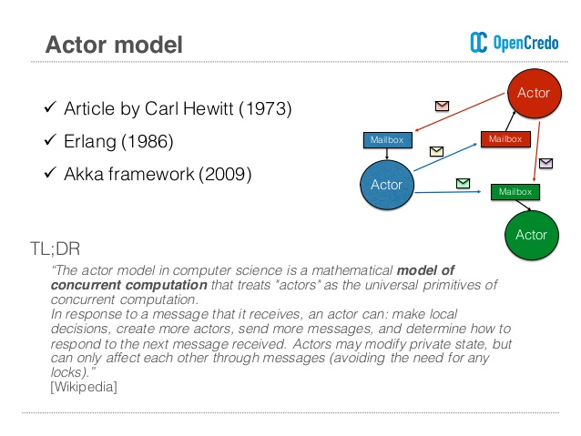

Event loop
并发编程中有多种并发模型，比如Java和很多C-like语言中的线程与锁，Go的CSP，JS和很多支持事件驱动的平台则是Event loop。Android中的Looper，iOS的RunLoop都是与之类似的机制。在Win32中，与Android等平台把Looper作为底层框架的一部分不同，你甚至需要自己写Looper。不过它们的实现方式都是类似的，Looper本质就是一个不断从消息队列（Message Queue）中取出消息（Message）处理的循环（很多实现是死循环）：
1 |
|
下面是android.os中的Looper
1 |
|
在浏览器中，需要异步操作的任务被放入了任务队列(Queue)中，调用栈(Stack)当前的任务被清空后，开始读取队列中的消息，并取出与消息相关的回调函数，连同参数，局部变量等相关的信息一起在调用栈入栈，在调用函数时会创建对应的栈帧，当栈中函数执行完毕后再次读取队列，如此循环。

在Android中，由于Java不能自由的传递闭包，无法像JS的Callback可以携带函数执行的上下文，做到任务环境的切换，所以有另一个重要的部分Handler用来传递和处理消息。Handler通常伴随着一个子线程出现，Android通过在子线程做耗时操作来保证主线程不被阻塞，这又和JS的Web Worker类似。在主线程中，Android中有一个唯一的消息队列即MessageQueue, JS中则可能同时存在多个所谓Task Queue， 其中还分MacroTask和MicroTask（ES2015标准又叫Job）两种，但每个Event loop中只有一个MicroTask Queue。不同种类的Queue存放了不同种类的任务：MacroTask包括I/O操作，UI渲染，setInterval，setTimeout之类的任务；MicroTask包括process.nextTick, Promise, Object.observe, MutationObserver等任务。
BTW: 虽然Promise.then()是异步执行的，但是new Promise（executor）是同步进行的。
Communicating sequential processes
CSP（通信顺序处理）模型最初由Hoare在1978年提出，随着Go的流行再次为人所知。Go通过go关键词开启“goroutine”，一个轻量级的由Go运行时管理的线程，并通过channel进行goroutine之间的通信。
1 |
|
在Go中，所有的代码都是运行在goroutine中的，即使没有显式的go func(), main函数也是一个goroutine。
Go的实现虽然参考了CSP模型，但只是借用了一部分概念比如Process/Channel（goroutine/channel），所以Go的程序并无法使用CSP工具进行分析，也无法杜绝死锁/活锁。因此Go提供了sync.Mutex锁保证线程安全。严格来说CSP是一门形式语言，类似于lambda calculas，定义如下反正看不懂：
Actor
贴近底层的线程和锁模型用共享数据的策略在并发线程中进行通信，带来了竞争条件的问题。而另外一种策略就是消息传递，消息传递机制的实现也分为两种：一种是Go中的基于Process/Channel的消息传递系统，另一种就是Actor。

Actor背后的哲学是“一切皆Actor”。像OOP中的一个个对象一样，Actor系统由一个个Actor构成，Actor会对被称为“消息”的输入而产生动作：包括发送有限个数的消息，创建有限个数新的Actor或者指定其接受下一个消息时的行为等。Actor可以改变它们私有的状态，但是只能通过消息传递来相互影响，这样避免了锁的必要。因为所有的消息都是异步传送的，所以传送者和接收者是解耦的，整个系统就有了并发性，可以不受限制的执行任何接收到消息输入的Actor。广义上来说，Email系统和SOAP都是Actor模型的例子。
Actor模型比较有名的实现有Erlang和Akka，这里我们以Scala的Akka为例：
1 |
|
Summary
上面简单介绍了几个并发模型，在实际应用中各自都有适合的使用场景。很多大型系统并不会只用到一种模型，会参考借用其中的概念。各个模型之间也不一定是泾渭分明的。
Reference
https://developer.mozilla.org/en-US/docs/Web/JavaScript/EventLoop
https://en.wikipedia.org/wiki/Event_loop
https://en.wikipedia.org/wiki/Communicating_sequential_processes
https://en.wikipedia.org/wiki/Actor_model
https://github.com/golang/go/wiki/LearnConcurrency
https://godoc.org/github.com/thomas11/csp
http://www.moye.me/2017/05/05/go-concurrency-patterns/
https://doc.akka.io/docs/akka/current/general/actors.html
https://www.ibm.com/developerworks/cn/java/j-jvmc5/index.html
Further Reading
Communicating Sequential Processes
Event-Based Programming without Inversion of Control
扫描二维码，分享此文章